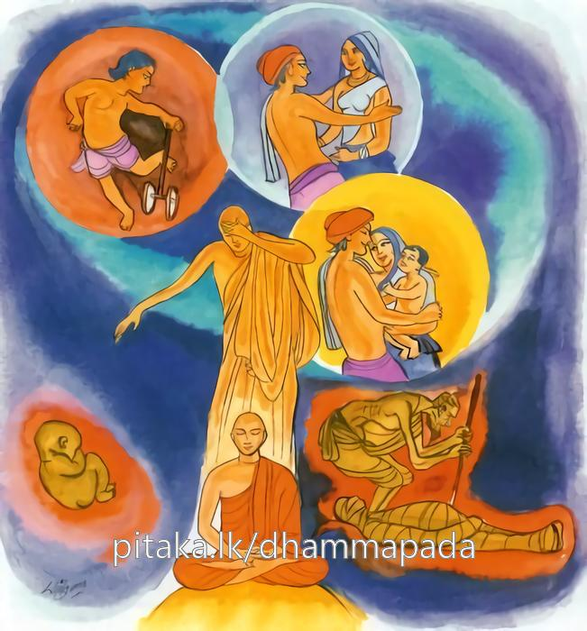

24-6 උග්ගසේන සිටුපුත්රයාගේ කථා පුවත
මෙම කතාව සද්ධර්ම සාගරයෙන් ද කියවන්න.
මුඤ්ච පුරෙ මුඤ්ච පච්ඡතො මජ්ඣෙ මුඤ්ච භවස්ස පාරගූ
සබ්බත්ථ විමුත්තමානසො න පුනං ජාතිජරං උපෙහිසි.
අතීත පස්කඳ කෙරෙහි තෘෂ්ණාව හරු. අනාගත පස්කඳ කෙරෙහි තෘෂ්ණාව ද හරු. වර්තමාන පස්කඳ කෙරෙහි තෘෂ්ණාව ද හරු. මෙසේ තුන් භවයේ පර තෙරට ගිය හෝ හැම ප්රත්යයසමුත්පන්නධර්ම කෙරෙන් මිදුනු සිත් ඇත්තෙහි, නැවත ජාතියට ජරාවට නො පැමිණෙන්නෙහි.

"මුඤ්ච පුරෙති” යන මේ ධර්ම දේශනය ශාස්තෲන් වහන්සේ වේළුවනා රාමයේ වැඩසිටියදී උග්ගසේන නිමිතිකරගෙන දේශනා කළහ.
පන්සියයක් නළුවෝ - සංවත්සරයේ දී හෝ සමසකින් හෝ පැමිණිවිට රජගහ නුවරට ගොස් රජු ඉදිරියේ දින හතක් උත්සව කොට බොහෝ රන් මසුරන් ලබත් මේ අතර පිනුම් ගසන්නන්ගේ ද කෙළවරක් නැත. මහජනයා මැසි පිට මැසි බැඳ ඒ මත සිට සැණකෙළිය බලත්. මේ අතර එක් නළුවෙකුගේ දුවක් උණ ගසකට නැග එහි උඩ පෙරළි එහි කෙළවර අහසේ සක්මන් කරමින් නටයි. ගයයි මේ අවස්ථාවේ උග්ගසේන නම් සිටු පුත් සිය මිතුරා සමග උඩ බැඳි ඇදක සිට ඒ නැටුම බලා ඇගේ අත්පා විසුරැවාලීම් කෙරෙහි උපන් නො ඇත්තේ ගෙට ගොස් ඇය ලැබුනොත් ජීවත් වෙමි. නොලැබෙන්නේ නම් මෙහිම මැරෙමි. ආහාර වර්ජනය කර ඇදේ වැතුරුනි. මවු පියන් විසින් දරුව ඔබට කුමක් රුචි වේදැයි විමසා ඒ නිළි යුවතියම ලබන්නේ නම් ජීවිතය ඇත. නො ලබන්නේ නම් මෙහිම මැරෙමි කීය. දරුව එසේ නොකරන්න. අපගේ කුලයට ද භෝගයන්ට ද සුදුසු වු කුමරියක ගෙන එන්නෙමුයි පැවසුවද එලෙසම කියා නිදාගත්තේය. අනතුරුව ඔහුගේ පියා බෙහෙවින් ආයාචනා කළද ඔහු දැනුවත් කිරිමට නොහැකිව. ඔහු ගේ මිතුරා කැඳවා කහවණු දහසක් දී මේ කහවණු ගෙන තම දියණිය මගේ පුතුට දෙන්නැයි නළුවන්ට පණිවිඩය යැව්වේය. ඔහු (නළුවා) කහවණු ගෙන නො දෙමි. ඉදින් ඔහුට මැය ලබානොගෙන ජීවත් වීමට නොහැකිනම් ඒ නිසා ඔහු අප සමගම හැසිරේවායි ද එවිට දුව දෙන්නේ යයි ද පැවසුවේය. දෙමව්පියෝ මේ කරුණ පුතුට දැන්වුහ. ඔහු මම ඔවුන් සමග හැසිරෙන්නෙමියි කියා දෙමාපියෝ ඇවිටිලි කරද්දිම ඔවුන්ගේ කථා නොපිළිගෙන ගෙයින් නික්මී නළුවාගේ ළඟට ගියේය. ඔහු ඔහුගේ දුව දී ඔහු සමගම ගම් නියම්ගම් රාජධානිවල ශිල්ප දක්වමින් හැසිරුනේය. ඇයද ඔහු සමග එකතු වී නොබෝ දිනකින් පුතෙකු ලැබ ඔහුට විහිළු කරමින් කරත්ත රකින්නාගේ පුතා භාණ්ඩ අදින්නාගේ පුතා කිසිවක් නොදන්නාගේ පුතා යනුවෙන් අපහාස දේ කියයි. ඔහු ද ඔවුන්ගේ කරත්ත ගාල්කර නතර කර සිටියතැන් වලදී ගොනුන්ට තණ කොළ වෙත එයි. ශිල්ප දක්වන ස්ථානයන්ට දෙන ලද භාණ්ඩ ඔසවාගෙන යයි. එහිදීද එය ගළපා එම ස්ත්රිය පුතුට ඇනුම්පද කියමින් එසේ කියයි. ඔහු තමන් නිමිති කරගෙන ඈ ගායනා කරන බව දැන මා නිමිති කරගෙන කියන්නේදැයි ඇසුවේය. එසේය ඔබ නිසා කියමි. එසේ නම් මම පළායමි. ඇය ඔබ ගියත් නොගියත් මට කමක් නැතයි නැවත නැවත එලෙසම (ඇනුම්පද සහිත) ගීතය ගයයි. ඇය නම් තමන්ගේ රූසපුවත් ධන ලාභයත් නිසා කිසිවෙක් නොතකයි. ඔහු මැගේ කවර කරුණක් නිසා මේ මානය තිබේදැයි සිතන්නේ ශිල්පය නිසායයි දැන හොදයි ශිල්පය උගනිමියි මාමා ලඟට පැමිණ ඔහු දන්නා ශිල්පය ඉගෙන ගම් නියම්ගම් ආදියේ ශිල්ප දක්වන්නේ පිළිවෙළින් රජගහ නුවරට පැමිණ මෙයින් පස්වන දින උග්ගසේන සිටුපුත් නගර වැසියන්ට ශිල්ප දක්වන්නේයයි ප්රචාරය කරවීය. නාගරිකයෝ මැසි පිට මැසි බැඳ සත්වැනි දින එක්රැස් වුහ. ඔහුද සැටරියන් උණගසකට නැග එහි මුදුනේ සිටියේය. එදවස බුදුහු උදැසන ලොව බලන්නේ ඔහු තමන්ගේ ඤාණ ජාලයේ ඇතුළට වැදුන බව දැන (දැලට හසුවුනා දැක) කුමක් වත්දැයි ආවර්ජනා කර බලන්නේ හෙට සිටුපුත් ශිල්ප දක්වන්නෙමියි උණගස මුදුනට නැග සිටින්නේ ය. ඔහු බැලීමට මහජනයා එක් රැස්වන්නේ ය. එහි දී මම සතර පද ගාථාවක් දෙන්නෙමි එය අසා අසුහාරදහසක් මිනිසුන්ට ධර්මාවබෝධය වන්නේය. උග්ගසේන ද රහත් බවට පත්වන්නේ යයි දැනගත්හ. බුදුහු දෙවන දින කාලය සලකා භික්ෂු සංඝයා පිරිවර කොටගෙන රජගහ නුවර පිඩුපිණිස හැසුරුනහ. උග්ගසේන ද බුදුහු පිවිසීට පෙරම ඝෝෂා කිරීමට මහජනයාට ඇගිලි ශබ්ද (අහුරු ශබ්දය නගා) උණ ගස මත්තට නැගී සිටියේය. මේ අවස්ථාවේදී බුදුන් නගරයට පිවිසෙන්නේ යම්සේ ඔහු පිරිසට නොපෙනෙන සේ තනි කර තමන් පමණක් පෙනෙන ලෙසට දැක්වූහ. උග්ගසේන පිරිස දෙස බලා පිරිස මා දෙස නොබලති කියා දෙසට පත් වුයේ මෙය මට අවුරුද්දකින් කළයුතු ශිල්පය බුදුන් ද නගරයට පිවිසෙනවිට පිරිස මදෙස නොබලා බුදුන් ම බලයි. මගේ මේ ශිල්ප දැක්වීම හිස් දෙයකැයි සිතුවේය. බුදුහු ඔහුගේ සිත දැනගෙන මහමුගලන් හිමි අමතා යන්න මුගලන් සිටු පුත්රයාට ශිල්ප දන්වන්නැයි කියන්න. තෙරුන් ගොස් උණගස යට සිටි සිටුපුත් අමතා මේ ගාථාව පැවසුහ.
නාට්ය පුත්රය මෙහි බලන්න උග්ගසේන මහ බල ඇත්ත රංගනය කරන්න. මහජනයා සිනා ගන්වන්න. ඔහු තෙරුන්ගේ කථාව අසා සතුටු සිත් ඇතිව බුදුහු මගේ ශිල්ප දකිනු කැමැත්තයි උණ ගස මත සිටිමින්ම මේ ගාථාව පැවසුවේය.
මහා ප්රාඥවු මහා ඍද්ධි ඇති මුගලන් රහතන් වහන්ස බලන්න රංගනය කොට මහජනතාව සිනා ගන්වමි.
මේ ලෙසට කියා උණ ගසේ අහසට නැග එසේම තුදුස් වතාවක් පෙරලී බැස උණගස මතම සිටියේය. අනතුරුව බුදුහු උග්ගසේන පණ්ඩිතය ඔබ අතීත - අනාගත වර්තමාන සම්බන්ධයන්හි ආලය අත්හැර ජාති ආදී දුකින් මිදීමට වටී. පවසා මේ ගාථාව දෙසුහ.
යටගිය මතුව එන - වත්මන තෙකල්හි
පස්කඳ කෙරෙහි ඇති ආසා මුදාලා
බිඳහැර දමා සව් කෙලෙසුන් සතොස්ලෙස
පිවිසෙනු නිවන් පුර නො පැමිණ ජරාවට
අතීතය මුදාලන අනාගතයෙන් දුරුවන මැද වර්තමානයෙන් පස්කඳ කෙරෙහි ඇති ආසාවෙන් මිදෙන්න පරතෙර ගිය කෙනෙක් වන්න. භවයාගේ පරතෙරට පැමිණෙන්න. නැවත ජාති ජරා තත්ත්වයට නොපත්වන්න
එහි මුඤ්ච පුරෙති - අතීත ස්කන්ධයන්හි හි ආලය ප්රාර්ථනය තෘෂ්ණාව මුදන්න. පච්ජති අනාගත සම්බන්ධයෙහිද ආලය මුදන්න. මජෙඣති වර්තමානයේ ද පස්කඳ පිළිබඳ ආසාව මුදන්න. මෙසේ ඇති කල්හි භවස්ස පාරගුති තුන් භවයන්යහි අභිඤ්ඤා පරිඥාන භාවනා සච්ජිකිරිය වශයෙන් සියලු සංඛතධර්මයන්හි විමුතතමාන සො ජාති ජරා මරණ යන මේවාට නොඑළඹෙන්න යන අර්ථයි. දේශනය අවසානයේ අසුහාර දහසක් ප්රාණීන්ට ධර්මාවබෝධය වුයේය.
සිටු පුත්රයා ද උණ ගස මත සිටියදීම (චතුපටිසම්භිදා) සිවුපිළිසිඹියා අරහත්වයට පත්ව උණ ගසෙන් බැස බුදුවෙත එළඹ පසඟ පිහිටුවා වැඳ බුදුන්ගෙන් පැවිද්ද ඉල්ලුවේය. අනතුරුව බුදුරජාණන් වහන්සේ දකුණ අත දිගුකොට එහි භික්ඛුති එව මහණයයි පැවසුහ. එකෙණෙහිම අටපිරිකරධාරී හැටවයස් තෙරනමක් මෙන් වුයේය. අනතුරුව භික්ෂූන් ඇවැත්නි උග්ගසේන හැටරියන් උස උණ ගසින් තොප බසින විට බියක් නොවුවේදැයි විමසුහ. නැත ඇවැත්නි මට බියක් නැතැයි පැවසීය ස්වාමීනි උග්ගසේන බිය නැතැයි පවසයි. නොවු දෙයක් කියා අනෙකක් කියන්නේයැයි පැවසුහ. තථාගතයන් වහන්සේ මහණෙනි. මගේ පුත් උග්ගසේන සමානවූ සංයෝජන සිඳ ලු භික්ෂූන් බිය නොවෙති. පවසා බ්රාහ්මණ වර්ගයේ මේ ගාථාව දේශනා කළහ.
"සබ්බ සං යෝජනං ජෙත්වා
යො වෙ ත පරි තස්ස ති.”
සියළු සංයෝජන සිඳ දමා යමෙක් නොතැවේද කෙලෙස් සංසිඳව විසංයුත්තවු තැනැත්තාට මම බ්රාහ්මණයයි කියමි.
දේශනය අවසානයේ බොහෝ පිරිසකට ධර්මාවබෝධය විය.
නැවත එක් දිනක් ධර්මසභාවේ කථාවක් ඇතිකළහ. ඇවැත් නො මෙබඳු රහත් වීමේ හේතු සම්පත් ඇති කෙනෙකුට කළු දුවක් නිසා නළුවන් සමග හැසිරීමට කරුණ කුමක්ද රහත් වීමට කරුණ කුමක්දැයි කථාකළහ. තථාගතයන් වහන්සේ පැමිණ කිනම් කථාවකින් යුතුව මා ඒමට පෙර සිටියේ දැයි විමසා මේ පිළිබඳව යයි පැවසුවිට මේ කරුණු දෙකම ඔහු විසින් කරන ලදැයි පවසා එය පෙන්වා දීමට අතීත කථාව දැක්වූහ.
පෙර කාශ්යප බුදුරදුන්ගේ ස්වර්ණ චෛත්යය කර වන විට බරණැසවාසී කුල පුත්රයෝ බොහෝ කෑයුතු බිදිය යුතු දෑ වාහනයකට දමා අත්කම් උදව් කරනෙමුයි චෛත්ය කරන තැනට යන්නේ අතර මග එක් තෙරනමක් පිඩුසිගා යාමට පිවිසෙන අයුරු දුටුවෝය. එක් කුල දුවක් තෙරුන් බලා ස්වාමියාට කීවේය. ස්වාමීනි ආර්යයන් වහන්සේ අප වෙත පිඩුසිගා වඩිති මේ රථයේද බොහෝ දේ ඇත පාත්රය ගෙනෙන්න භික්ෂාව දෙන්නෙමි. ඔහු පාත්රය රැගෙනවිත් ආහාර පුරවා තෙරුන් අත තබා දෙදෙනාම ප්රාර්ථනා කළහ. ස්වාමීනි ඔබවහන්සේට දීමෙන් මෙලොව දීම ප්රතිඵල ලබන්නෝ වෙමු. එම තෙරණුවෝද රහතන් වහන්සේ නමකි. එනිසා ඔවුන් දෙස බලා ඔවුන්ගේ පැතුම ඉටුවන බව දැන සිනහ පහළ කළහ. එය දැක එම ස්ත්රීය ස්වාමියාට කිවාය. අපේ ආර්යයන් වහන්සේ සිනාසෙති එතෙක් නටන්නෙත් (නළුවෙක්) වන්නේය. ස්වාමියා ද එසේම වන්නේයයි කියා පිටත්ව ගියහ. මේ ඔවුන්ගේ පුර්ව කුශල කර්මයයි. ඒ අය එහි දිවි ඇතිතෙක් සිට දෙලොව ඉපිද ඉන් චුතව එම ස්ත්රිය නළු ගෙදරක ඉපදුනි. පුරුෂයා සිටුගෙයක ඉපදුනි. ඇගේ ප්රතිවචන දීම නිසා නිළියන් සමග හැසිරුණි - ක්ෂීණාශ්රවයන්ට දුන් පිණ්ඩපාතය නිසා අරහත්වයට පත්විය. ඕ තොමෝද නිළි දියණියද මගේ ස්වාමියාගේ ස්වභාවයට මම ද පැමිණෙන්නෙමියි මෙහෙණි සස්නෙහි පැවිදි වී, අරහත්භාවයෙහි පිහිටියාය.